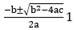
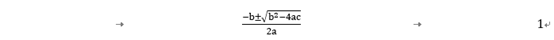
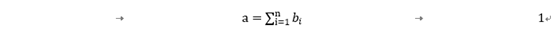
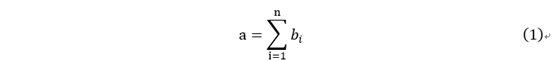
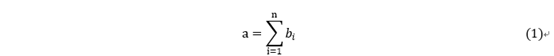

Word中公式中自动编号的最终解决办法
网上讲述的有两种方式，一种是表格，一种是Tab控制缩进。不喜用表格做束缚，毕竟对于很长的公式，或者很长的编号，边框限制了它的想象，于是想用Tab控制缩进的方式。。。 路漫漫。。
制表位法公式
- 新建一个word2016文档，打开文档后，点击菜单栏中布局。点击布局选项卡中
纸张大小，设置为A4大小。 - 点击
页边距，选择为常规页边距。 - 在word页面中点击菜单栏
插入，点击公式（或者按Alt 和 = 键），弹出列表中选择一个公式，例如二次公式。 插入公式后，在公式后面，点击菜单栏
引用>插入题注，标签为公式，勾选从题注中排除标签，点确定自动插入编号。 由于除了公式之外，本行还有一个编号1，因此Word自动识别为行内公式，居左。右键单击公式所在的行，弹出列表中点击“段落”。打开段落设置窗口，点击左下角的“制表位”。
- 打开制表位窗口。设置第一个制表位，即公式前面的制表位，在制表位位置处输入：7.32厘米，选择对齐方式为“居中对齐”。点击设置按钮。
- 继续设置第二个制表位位置，输入位置数值为：17.82厘米，对齐方式选择为“右对齐”，点击确定按钮。
- 将光标置于公式前面，按下键盘上的Tab键，则公式就会向右移动到第一个制表位的位置。
然后光标置于公式和编号中间，按下键盘上的Tab键，则编号就会移动到第二个制表位的位置。如图所示。
一次偶然地尝试写大型运算符，比如求和运算符的时候，

额，好丑有么有，通过一系列的查询，发现在公式外框的下拉菜单中，选择更改为显示，于是我的公式变成了下面这样
公式是好看了，可编号你妹的，，别跑。。呀。。 经过一系列的折腾，发现此法行不通了，嘤嘤嘤。。。
- 然鹅，一次偶然发现，原来Word里的公式是自己资瓷编号的，在公式里添加
#(1)即可，于是试了试

然后公式框上的下拉菜单选择专用，把公式转变为专业格式，然后就出现了下面这一幕。

咦，挺像那么回事了。。
12. 然鹅！我又然鹅了！能不能在公式中插入题注呢~于是便有了下图。

插入之后，同样按公式框上的下拉菜单选择专用，把公式转变为专业格式，看到编号已经右对齐啦。

- 然后，怎么知道自动编号有没有用呢，你可以重复上述步骤，然鹅，我是不会这么干的，太慢啦~
- 选中已有公式，菜单
插入>文档部件>自动图文集> 将所选内容保存到自动图文集，并保存到文档模板normal.dot。 - 点击菜单中
文件>选项>快速访问工具栏>从下列位置选择命令中选择"插入"选项卡，双击自动图文集，可以看到右侧已添加自动图文集，点确定将自动图文集添加到快速访问工具栏。 - 在Word窗口的最左上角，点击
自动图文集按钮，选择公式，然后可以插入自动编号的美观大方的Word公式啦。
正在加载今日诗词....